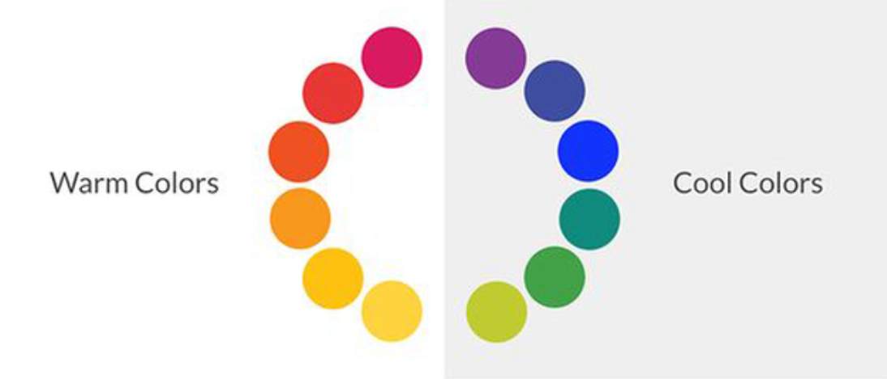
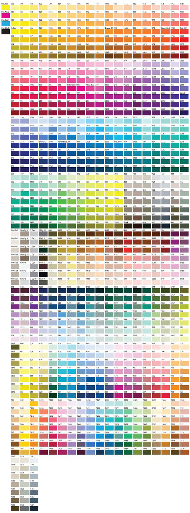

ทฤษฎีสี (Theory of Color) หมายถึง ทฤษฎีของแม่สี ที่เป็นต้นกำเนิด ของการผสมสีเพื่อให้เกิดเป็นสี เพื่อนำไปใช้สร้างงานศิลปะหรืองานออกแบบแขนงต่าง ๆ
โดยสีตั้งต้น ซึ่งคือ "แม่สี" จะประกอบด้วย 3 สี คือ
1. สีแดง (Red, R)
2. สีเหลือง (Yellow, Y)
3. สีน้ำเงิน (Blue, B)
การผสมแม่สีแต่ละสีให้เข้ากัน ก็จะทำให้เกิดเป็น "วงล้อสี" (Color Wheels) ซึ่งเป็นเครื่องมือที่ใช้รวมสีเข้าด้วยกัน วงจรสีวงแรกถูกสร้างโดยเซอร์ ไอแซค นิวตัน ในปี 1666 "วงล้อสี" ออกแบบมาโดยแนวคิดที่ว่าสีอันไหนที่คุณเลือกจากวงล้อสีจะดูดีเมื่ออยู่ด้วยกัน มีความหลากหลายของการออกแบบที่สร้างขึ้นแต่แบบที่ธรรมดาเห็นได้ทั่วไปคือวงล้อสีแบบ 12 สี พื้นฐานจากสี RYB(แดงเหลืองน้ำเงิน)
"วงล้อสี" เมื่อแบ่งครึ่ง เราจะพบว่า "สี" นั้นจะแบ่งเป็น "สีโทนร้อน" และ "สีโทนเย็น"
"สีโทนร้อน" หมายถึง ชุดสีที่ประกอบด้วย สีส้มเหลือง สีส้ม สีส้มแดง สีแดง และสีม่วงแดง สีวรรณะร้อนให้ความรู้สึกตื่นตา มีพลัง อบอุ่น สนุกสนาน และดึงดูดความสนใจได้ดี
"สีโทนเย็น" หมายถึง ชุดสีที่ประกอบด้วยสีเขียวเหลือง สีเขียว สีเขียวน้ำเงิน สีน้ำเงิน และสีม่วงน้ำเงิน โครงสีเย็นให้ความรู้สึกสุภาพ สงบ ลึกลับ เยือกเย็น
วงล้อสีจะทำให้เราเข้าใจง่ายขึ้นว่าการสี Primary (สีปฐมภูมิ) , Secondary (สีทุตติยภูมิ) , Tertiary Color (สีตติยภูมิ) นั้นคืออะไร?
Primary - แดง เหลือง น้ำเงินคือสีหลัก เป็นสีที่ไม่สามารถผสมด้วยสีใดๆได้หรือเรียกว่าแม่สี
Secondary - 3 สี เกิดจากการเอาสีขั้นต้นมาผสมกันได้เป็น ส้ม เขียว ม่วง
นอกจากนี้ วงล้อสีก็มีทฤษฎีการ "จับคู่สี" อีกมากมาย เพื่อฝึกให้เราเข้าใจความเหมาะสมและความเข้ากันของสีแต่ละสี
บางคนอาจสงสัยนะ ว่าต้องเรียนทัศนศิลป์หรือ Graphic Design อย่างเดียวหรือเปล่า ถึงต้องเรียนรู้เรื่อง "ทฤษฎีสี" - คำตอบคือ "ทฤษฎีสี" สำคัญกับทุกสายงานอาชีพงานศิลปะหรือออกแบบ ไม่ว่าจะเป็น Architect, Interior, Product หรือแม้กระทั่ง Fashion